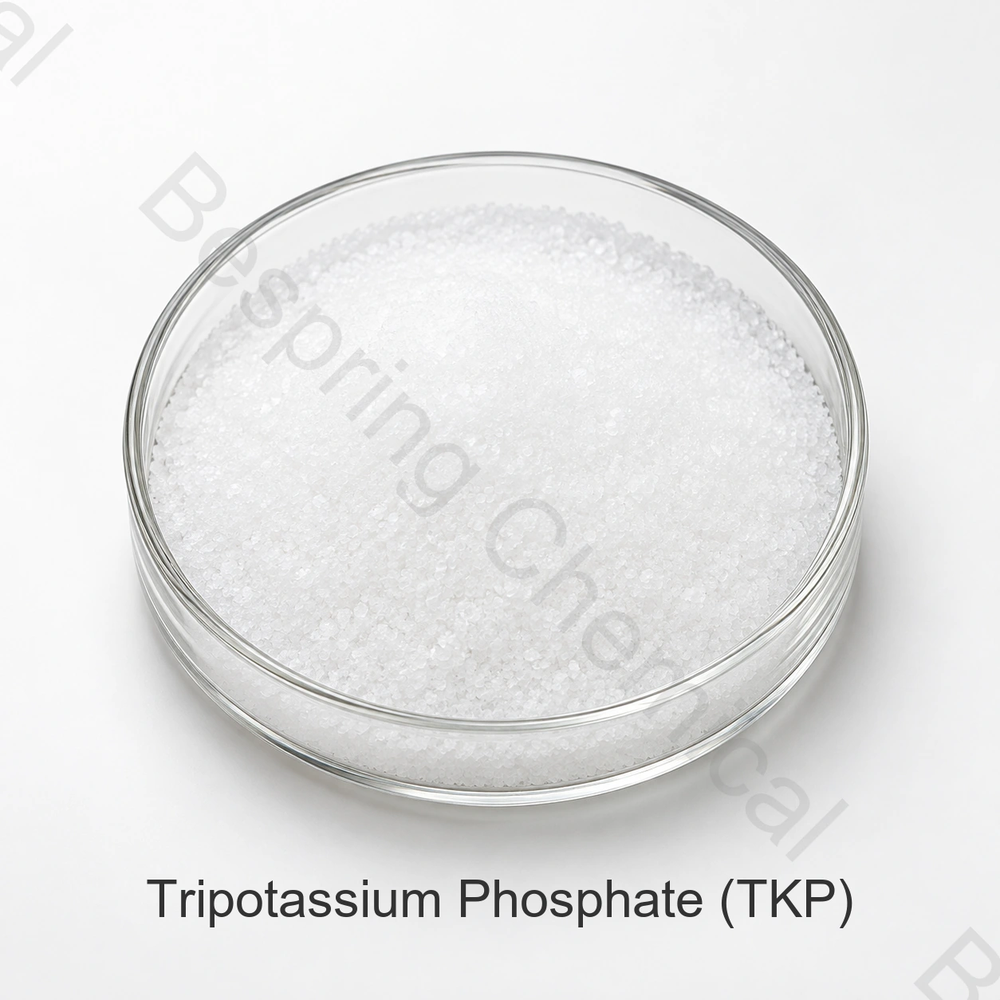

缓冲与螯合
JECFA列出了缓冲剂和螯合剂功能。在pH值和矿物质相互作用影响稳定性或工艺性能的情况下,可以评估TKP。
- 碱性缓冲剂
- 金属离子螯合
- 工艺pH调节
食品级磷酸盐 · 钾盐 · INS 340(iii)
磷酸三钾是一种强碱性钾正磷酸盐,用于选定的食品系统中缓冲、乳液稳定、螯合、乳化和肉类粘结。
包括水合物形态、食品用途、目标规格、数量、目的地和文件。

产品概述
食品级磷酸三钾(TKP ) , 也称为三碱性磷酸钾或三钾正磷酸盐,具有无水分子式K3PO4，CAS 编号为 7778-53-2，INS 编号为 340(iii)。
JECFA认可无水和水合形式。所提供的数据表中至少显示97.0% K3PO4; 买方应指定水合物基础,因为与水分相关的限值和交付的含量测定可能会有所不同。
功能作用
TKP是一种碱性磷酸盐。其适用性取决于确切的形式、剂量、完整配方、工艺和适用的食品类别规则。
JECFA列出了缓冲剂和螯合剂功能。在pH值和矿物质相互作用影响稳定性或工艺性能的情况下,可以评估TKP。
所提供的信息确定乳化剂、强化剂、调味剂和肉类结合剂的作用;JECFA确定乳化稳定剂。
食品应用筛选
所提供的信息列出了功能,而不是封闭的食品类别列表。从预期工艺和可测量的验收标准开始。
评估实际肉制剂中的粘结、乳化稳定性、产量、质地、pH值和味道。
测试脂肪-水稳定性,蛋白质反应和工艺容忍度在拟议的添加量。
确认溶液pH值、缓冲反应和相容性;TKP比MKP或DKP更碱性。
在金属离子影响稳定性、外观或加工的完整系统中评估螯合。
如果这些功能是目标,验证感官效应、营养计算、标签和合法使用。
在工厂规模使用前,定义目标结果、控制配方、水合物形态、剂量和测试方法。
已提供的技术数据
以下数值转载自所提供的产品表。它们不是批量COA或通用汇编标准。确认水合物形态,现有签署规格和测试方法前批准。
| 检测项目 | 规格 |
|---|---|
| 磷酸三钾(K3PO4）含量 | ≥97.0% |
| 砷(As) | ≤0.0003% |
| 氟化物(F) | ≤0.001% |
| 重金属(以Pb计) | ≤0.0015% |
| 铅(Pb) | ≤0.0002% |
| 不溶于水的物质 | ≤0.2% |
| 灼烧失重(如所附表格所示) | ≤8–20% |
水合物和方法检查: 所提供的灼烧失重条目结合了一个最大符号和8-20%范围,并没有说明水合物形态。要求签署规范并确认预期的标准和方法,然后再使用它进行验收。
采购评估支持
请求当前规格/TDS、SDS、水合物声明、测试方法和代表或批次COA。
请求适用的 HACCP、犹太教、清真和 ISO 文件,并验证产品、地点、范围、发行人和有效性。
参阅 FAO/WHO JECFA 磷酸三钾专论 用于识别、形式和功能使用情况。
储存与操作
采购常见问题
不是。TKP 是磷酸三钾，K3PO4。KTPP 是三聚磷酸钾，K5P3O10, TKPP是焦磷酸四钾,K4P2O7。每种都需要单独的规格。
在选定的食品系统中被评估为缓冲剂、螯合剂、乳化稳定剂、乳化剂和肉类粘合剂。所提供的表格还确定了需要配方和监管审查的强化剂和调味剂作用。
无水和水合TKP具有不同的含水量和灼烧失重特性。在采购规范中说明所需的形式和分析依据。
参考数量为每袋25公斤，每20英尺集装箱22公吨，最低订单量为500公斤。确认当前衬垫、托盘和装载详情。
提供水合物形态、食品用途、目标规格、数量、包装、目的地、所需文件和交货日期。
编辑审核: 百泉化工技术出口团队 · 最后审核时间:2026-07-20
相关磷酸钾
INS 340(ii ) , 适用于选定食品系统的碱性较低的钾正磷酸盐。
INS 340(i ) , 用于选定的缓冲、培养和发酵应用。
一种具有不同成分、功能和规格的磷酸盐凝聚物。
按规格要求采购
共享审查技术适配性、文档和交付所需的详细信息。